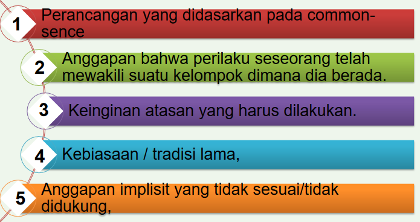
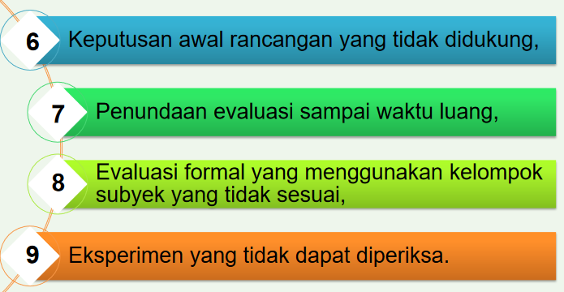
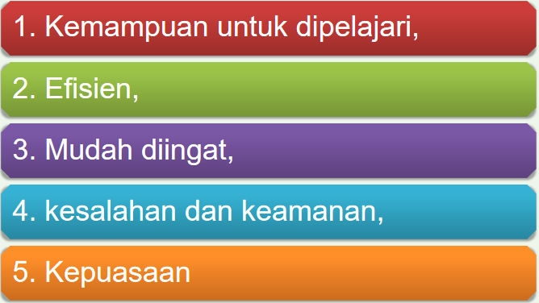

Pendahuluan
Pertanyaan yang sering timbul
-
Apakah anda akan merancang sistem yang sangat efisien yang
memungkinkan pengguna untuk bekerja dengan produktivitas tinggi?
-
Apakah anda akan merancang sistem yang menantang dan mampu
memotivasi pengguna, sehingga mendukung pembelajaran yang efektif?
Kebergunaan VS Pengalaman Pengguna
-
✔ kebergunaan : untuk memenuhi kriteria khusus dari kebergunaan
(efisiensi) dan
-
✔ pengalaman pengguna yang hendak dicapai : peningkatan kualitas
pengguna (misalnya tampilan yang secara estetika menyenangkan)
Kesalahan Klasik


Definisi Kebergunaan
Derajat kemampuan sebuah perangkat lunak untuk membantu penggunanya
menyelesaikan sebuah tugas.
Kebergunaan...
Dix et al. (2004): sistem yang dapat membantu pengguna untuk
menyelesaikan permasalahan mereka adalah sistem yang:
-
✤berguna (useful): sistem yang berfungsi seperti yang diinginkan
oleh penggunanya
- ✤dapat digunakan (usable): sistem yang mudah dioperasikan
-
✤digunakan (used): sistem yang memotivasi penggunanya untuk
digunakan
-
✒ Kebergunaan adalah atribut kualitas yang menunjukkan seberapa
mudah suatu antarmuka digunakan
-
✒ Juga sering diartikan sebagai metode yang digunakan untuk
meningkatkan kemudahan penggunaan suatu antarmuka
- ✒ Terdiri atas 5 komponen kualitas
Lima buah komponen kualitas untuk menentukan kebergunaan sistem
(nilsen, 2003) yaitu :
